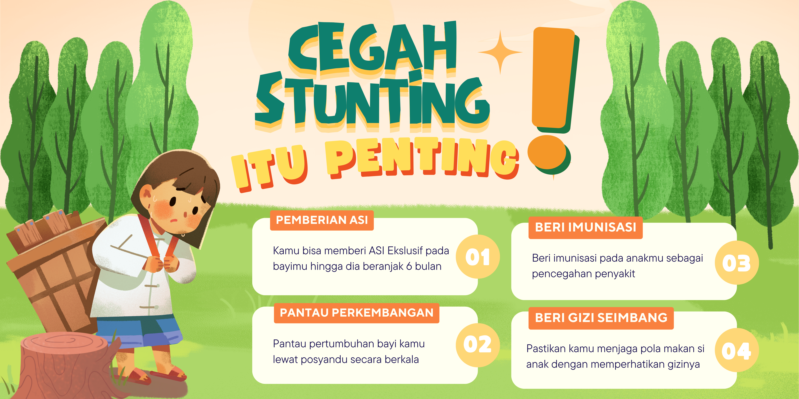

Kami menyediakan informasi dan alat bantu untuk membantu Anda mencegah stunting pada anak. Pelajari lebih lanjut di menu Edukasi atau pantau perkembangan anak Anda di menu Pantau Anak.

Stunting adalah kondisi gagal tumbuh pada anak akibat kekurangan gizi kronis, infeksi berulang, dan stimulasi yang kurang optimal. Anak stunting cenderung lebih pendek dibandingkan anak seusianya. Stunting terjadi akibat kekurangan gizi yang berlangsung lama, infeksi berulang, serta faktor lingkungan yang tidak mendukung, terutama pada 1000 hari pertama kehidupan (9 bulan dalam kandungan hingga usia 2 tahun). Kondisi ini dapat menyebabkan dampak jangka panjang pada kemampuan fisik dan kognitif anak, yang pada akhirnya mengurangi kualitas sumber daya manusia di masa depan.
Video Edukasi StuntingArtikel ini membahas masalah stunting yang semakin berkembang di Indonesia, dampaknya pada anak-anak, dan upaya yang diperlukan untuk mengatasi krisis kesehatan masyarakat ini. Baca artikel lengkapnya untuk memahami penyebab dan solusi yang dapat diterapkan.
Baca Artikel SelengkapnyaStunting adalah gagal tumbuh akibat kurangnya asupan gizi, di mana dalam jangka pendek dapat menyebabkan terganggunya perkembangan otak, ...
Baca Artikel SelengkapnyaGunakan alat ini untuk melacak status gizi dan perkembangan anak Anda:
Rekomendasi Nutrisi:Jika Anda memiliki pertanyaan atau membutuhkan bantuan lebih lanjut, silakan hubungi kami:
Telepon: 021-123456
Email: info@pencegahanstunting.id
Alamat: Kantor Dinas Kesehatan, Jakarta.
Jam Operasional: Senin-Jumat, 08.00-17.00.
Pertanyaan Umum:
1. Apa tanda-tanda anak stunting?
Anak lebih pendek dari teman seusianya dan berat badan tidak sesuai
standar.
2. Apakah stunting bisa dicegah?
Ya, dengan nutrisi baik sejak kehamilan dan pola makan seimbang untuk
anak.